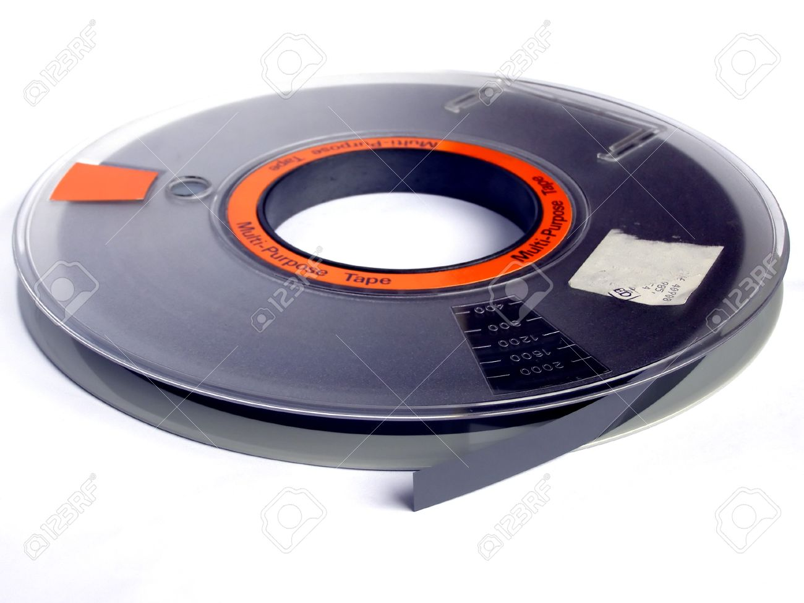
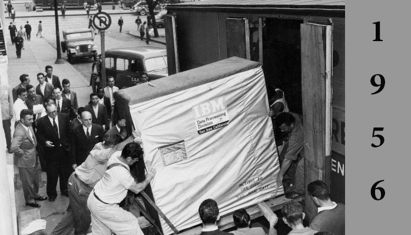

ejemplo1.xlsxCurso de Base de Datos
Teoría de Base de datos
Breve historia
Desde la antigüedad se utilizaban bibliotecas y toda clase de registros
Censos
Información sobre cosechas
Información comercial
Proceso manual
Dificultades en las búsquedas
Automatización ( Siglo XIX )
Máquina de tarjetas perforadas → Herman Hollerith (1884)
Censo de Estados Unidos

1950’s
Aparición de cintas magnéticas
Almacenado de forma secuencial
Primeras aplicaciones en la industria

1960’s
Disminución de costos en equipo de cómputo
Aparición de los discos duros
Extracción de información de manera directa

1960’s
Primeras bases de datos
Jerárquicas
Red
IBM + AA = SABRE
1960’s
CODASYL → (Conference on Data Systems Languages)
Esquemas para crear sistemas de datos más efectivos
Diseñar estándares
1970’s
Edgar Frank Codd → Teoría de bases de datos relacionales
Aparición de la 2a generación de los sistemas gestores de Base de Datos
1970’s
Larry Ellison → Crea el "Relational Software System" (1979)
System R (IBM) → Lenguaje SEQUEL
Ingress (UBC - 1973) → Lenguaje QUEL
1980’s
Definición del lenguaje SQL (Structured Query Language)
Estándar ANSI/ISO ( 1986 )
Surgimiento de los Relational Database Management Systems (RDBMS) modernos
Oracle DB
IBM DB2 / Informix
SQL Server
1990’s
Aparición de RDBMS de Código Abierto
PostgreSQL (1996)
Mysql
20xx’s
Estándar SQL 2019
Aparición del movimiento NoSQL
Big Data
Modelo Relacional
Organización de la información
Tablas
Columnas
Filas
Modelo Relacional
Tablas → Entidad
Filas → Tuplas o registros
Columnas → Atributos que representan a la entidad
Relaciones → Conexiones lógicas entre las tablas
Ejemplo
Normalización
Técnica de diseño de base de datos que nos permite organizar la información eliminando la redundancia y dependencia de datos
Existen 6 formas normales definidas
En la práctica se aplican 3 o 4
1NF
Cada registro debe ser único
Cada atributo debe contener un único valor
Cada atributo debe ser del mismo "tipo"
El orden de los atributos no importa
2NF
Cumplir la 1NF
No deben existir "dependencias parciales"
Los registros deben poder ser identificables
Llaves
Valor que identifica un registro de manera única
Puede constar de una o más columnas
Llave primaria
Columna con un valor único en toda la entidad
No puede ser nulo
No debe cambiar
Debe existir desde la inserción del registro
3NF
Cumplir la 2NF
No deben existir "dependencias transitivas"
Información de una entidad dentro de otra
Llave foránea
Permite relacionar registros entre diferentes entidades
Puede repetirse o ser nula
Se asegura que exista un registro cuya llave primaria corresponda al valor descrito
Otros consejos
No deben existir valores "calculados"
Se puede romper la normalización bajo casos especiales (y con mucha experiencia)
Analizar y diagramar el modelo previo a su utilización
Diagrama E/R
https://www.draw.io/RDBMS
Sistema que permite:
Definir
Crear
Mantener
Controlar el acceso → A bases de datos
ACID
Atomicity → Las transacciones deben ser consideradas como una unidad
Consistency → Asegurarse que una transacción cambia a un estado predecible
Isolation → Debe asegurarse que las transacciones simultáneas generen el mismo efecto que las transacciones secuenciales
Durability → Cuando una transacción ha sido sometida (Committed) debe mantenerse persistente
PostgreSQL
Características
Derivado de Ingres
Código Abierto
No es controlada por ninguna corporación
Características
Comunidad grande y constante
Utiliza SQL Estándar
Arquitectura Cliente - Servidor
Ejercicio 1
Instalar Postgresql
Instalar PGAdmin
Crear una base de datos
SQL
Structured Query Language
Lenguaje de 4 generación
Declarativo
Enfoque en la definición del resultado
A partir de álgebra y cálculo relacional
Estructura
DDL → Data Definition Language
DML → Data Manipulation Language
DCL → Data Control Language
DDL - Crear tabla
CREATE TABLE [ IF NOT EXISTS ] nombre_tabla ( [
{ nombre_columna tipo_dato [ contraint_columna [ ... ] ]
| constraint_tabla } )NULL
Indica que un valor no existe
No confundir con "Vacío" o Cero (0)
Null es un estado, no un valor
Tipos de datos
VARCHAR(x)/CHAR(x) → Texto con un tamaño limitado
TEXT → Texto con tamaño ilimitado
SMALLINT → Entero (2 bytes)
INT → Entero (4 bytes)
BIGINT → Entero (8 bytes)
Tipos de datos
FLOAT / DOUBLE → Número decimales (IEEE 754)
NUMERIC(x,y) → Decimales con precisión definida
DATE/TIMESTAMP
BOOLEAN
Constraint
Restricciones en el almacenado de una columna / tabla
NULL / NOT NULL → Si acepta o no que la columna tenga el estado Null
DEFAULT {expr} → Asigna un valor default si no se proporciona uno
UNIQUE → El valor no se puede repetir
PRIMARY KEY [(columna1 [, columna2])] → Asigna la columna como llave primaria
Constraint
FOREIGN KEY ( nombre_columna [, ... ] )
REFERENCES tabla_referencia [ ( columna_referencia [, ... ] ) ]Crea una llave foránea
Ejercicio 2
Crear tablas con base al archivo ejemplo01.xlsx normalizado